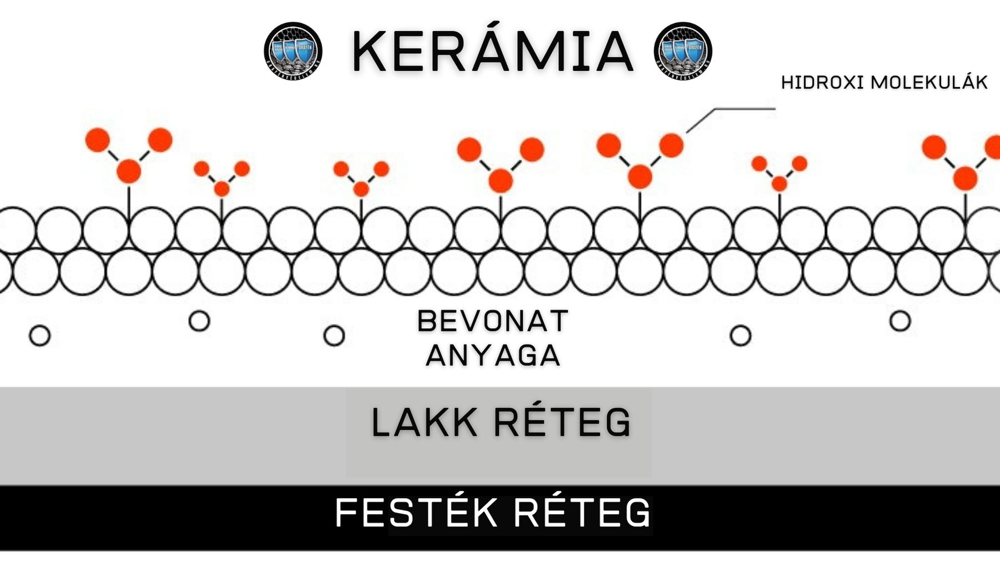
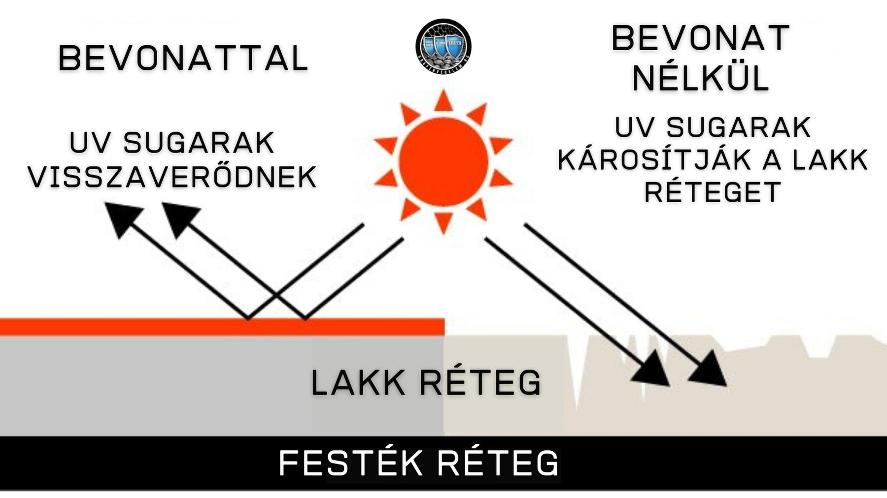
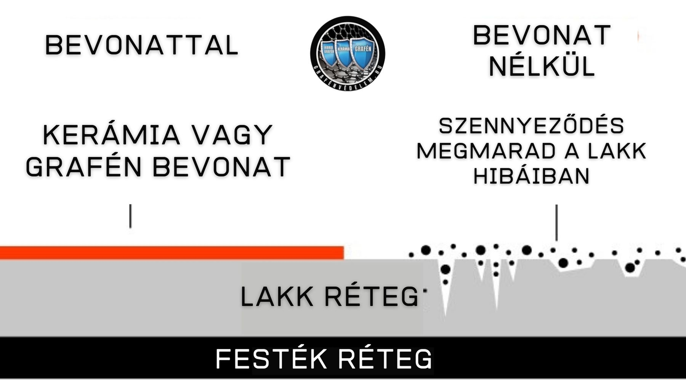
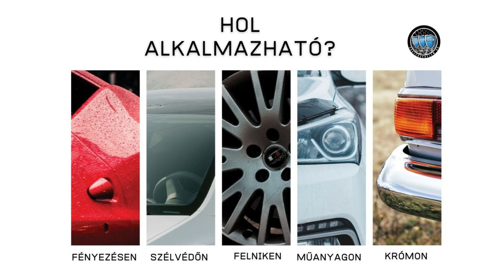

Kerámia mátrix bevonat

A kerámiabevonat definíció szerint egy olyan eljárás, amely belső és külső felületek védelmére szolgálja az apróbb karcolásoktól és szennyeződésektől. Elsősorban szilícium-dioxidból és titán-dioxidból áll, ez a két anyag együtt kovalens kötést képez, amely egy víztaszító hatással rendelkező pajzsot képez a jármű felszínén.
Több mítosz és félreértés is kering az eljárással kapcsolatban - például az, hogy kerámiabevonat megvédi az autót a konkrét felgyújtástól. Ez közel sem igaz, viszont ennek ellenére még így is gyönyörű eredményeket lehet vele elérni.


Mire szolgált a kerámia bevonat?
Óvja a kocsidat az ártalmas UV sugárzástól
Az ártalmas UV sugárzástól az autó fényezése hajlamos lehet elszíneződni, halványodni illetve fakulni. Ezt a veszélyt a kerámia bevonat hosszú időre elhárítja, így nem kell amiatt aggódnod, hogy az UV sugárzás kárt tesz az autód festésében.
Sokkal könnyebb tisztítást tesz lehetővé.
A kerámia bevonat természeténél fogva rendkívüli vízlepergető hatással rendelkezik, ezáltal jelentősen megkönnyíti a tisztítás folyamatát. Ezen kívül jobban védi az autód a maró hatású szennyeződésektől is: bogár maradvány, madár ürülék, stb. Ezek a szennyeződések ha sokáig maradnak a karosszérián akkor szó szerint belemaródnak a fényezésbe és eltávolításuk után foltot hagynak. Viszont a kerámia (és egyéb védelmeknél is) bevonat esetén ezek a szennyeződések előbb a bevonatot érik és azzal kell “megküzdeniük”, hogy árthassanak a csodás fényű autódnak.
Fényesség és csillogás
A kerámia bevonattól olyan fényes lesz az autó, mintha minden egyes reggel fényesre lett volna polírozva. Ez a fény ad az autónak egy exkluzív hatást, amitől bárkinek leeshet az álla a környezetedben. Ezt a mély és rendkívüli fényt elérni csak szakember tudja. Önmagában a kerámia bevonat kevés. Hosszú, összetett munkát igényel. Megj.: a bevonat az összhatás 5-10%-át adja „csak”
Összegzés
Könnyített tisztítás, hiszen fokozott vízlepergető hatással ruházza fel a járművet Sima felületet képez, miközben fokozza a fényt Segít megóvni a felületet a környezeti hatásoktól, ellenállóbbá teszi a savas, lúgos behatásokkal szemben
Extra UV védelmet biztosít a fényezésnek, ezáltal védi az autó festését
